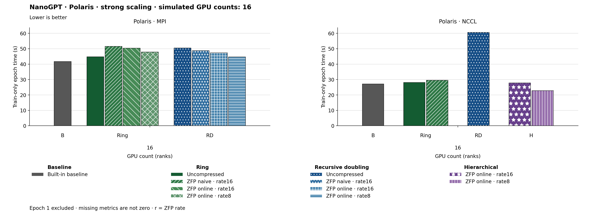

The figure uses bars. Families and methods are identified by text and patterns in addition to color. The metric is Train-only epoch time (s). Polaris · MPI, GPU count (ranks) 16: Built-in baseline has the lowest plotted value, 41.670. Polaris · NCCL, GPU count (ranks) 16: Hierarchical · ZFP online · rate8 has the lowest plotted value, 22.820. Epoch 1 is excluded. Values are medians; when repeated runs are available the selected repeat policy is median. These are not confidence intervals across repeated jobs. Missing or unrecorded metrics are omitted, not set to zero.
| Panel | GPU count (ranks) | Method | Value | Runs |
|---|---|---|---|---|
| Polaris · MPI | 16 | none | 41.67 | 1 |
| Polaris · MPI | 16 | recursive_doubling | 50.43 | 1 |
| Polaris · MPI | 16 | recursive_doubling_zfp_naive:16 | 48.77 | 1 |
| Polaris · MPI | 16 | recursive_doubling_zfp_online_coll:16 | 47.37 | 1 |
| Polaris · MPI | 16 | recursive_doubling_zfp_online_coll:8 | 44.69 | 1 |
| Polaris · MPI | 16 | ring | 44.78 | 1 |
| Polaris · MPI | 16 | ring_zfp_naive:16 | 51.55 | 1 |
| Polaris · MPI | 16 | ring_zfp_online_coll:16 | 50.34 | 1 |
| Polaris · MPI | 16 | ring_zfp_online_coll:8 | 47.89 | 1 |
| Polaris · NCCL | 16 | none | 27.1 | 1 |
| Polaris · NCCL | 16 | ring | 28.12 | 1 |
| Polaris · NCCL | 16 | ring_zfp_naive:16 | 29.51 | 1 |
| Polaris · NCCL | 16 | recursive_doubling | 60.61 | 1 |
| Polaris · NCCL | 16 | hierarchical_zfp_online_coll:8 | 22.82 | 1 |
| Polaris · NCCL | 16 | hierarchical_zfp_online_coll:16 | 27.77 | 1 |